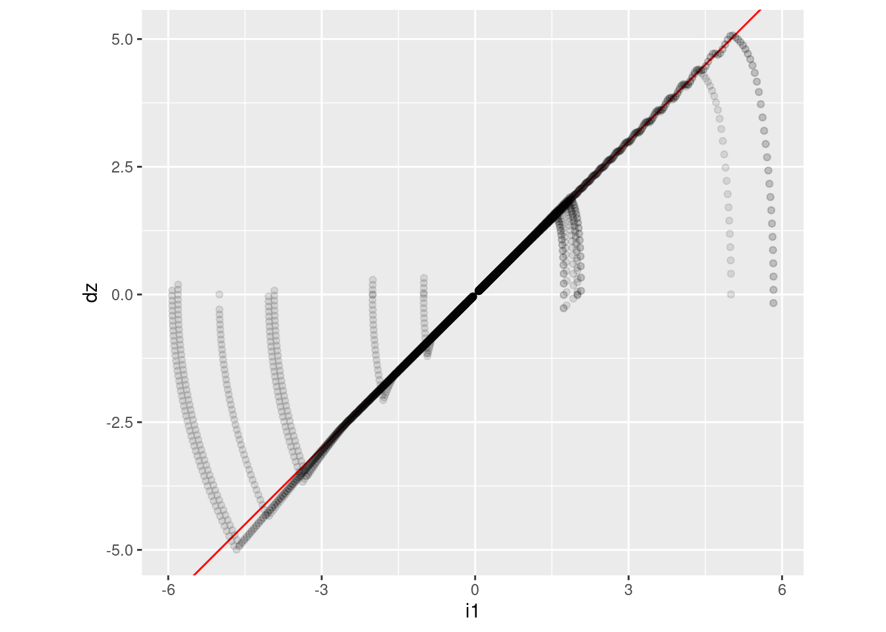
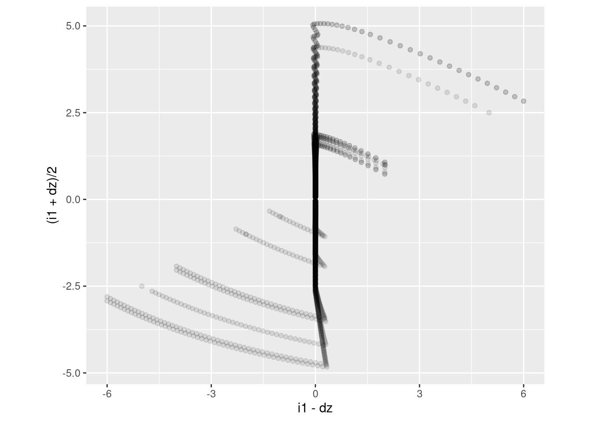
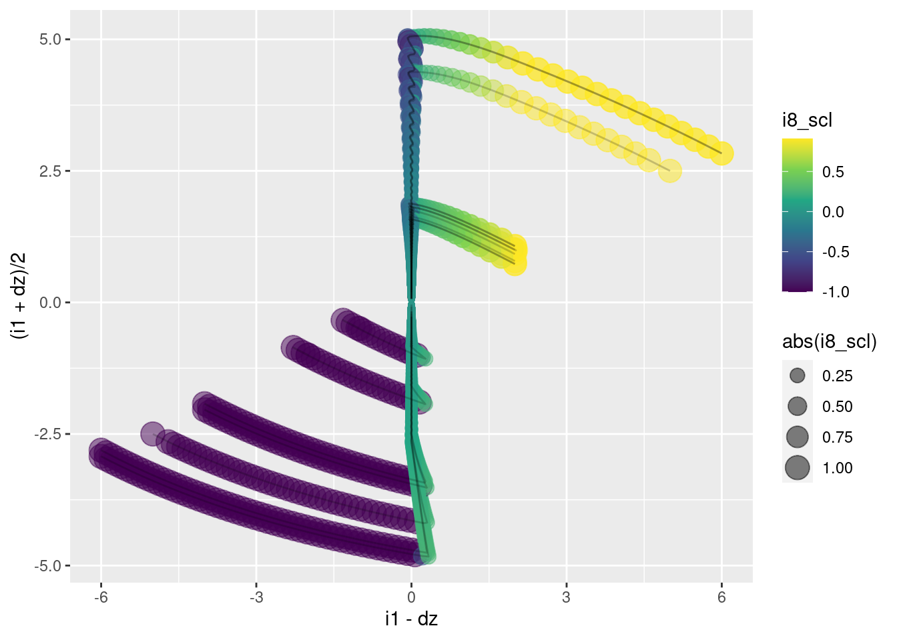
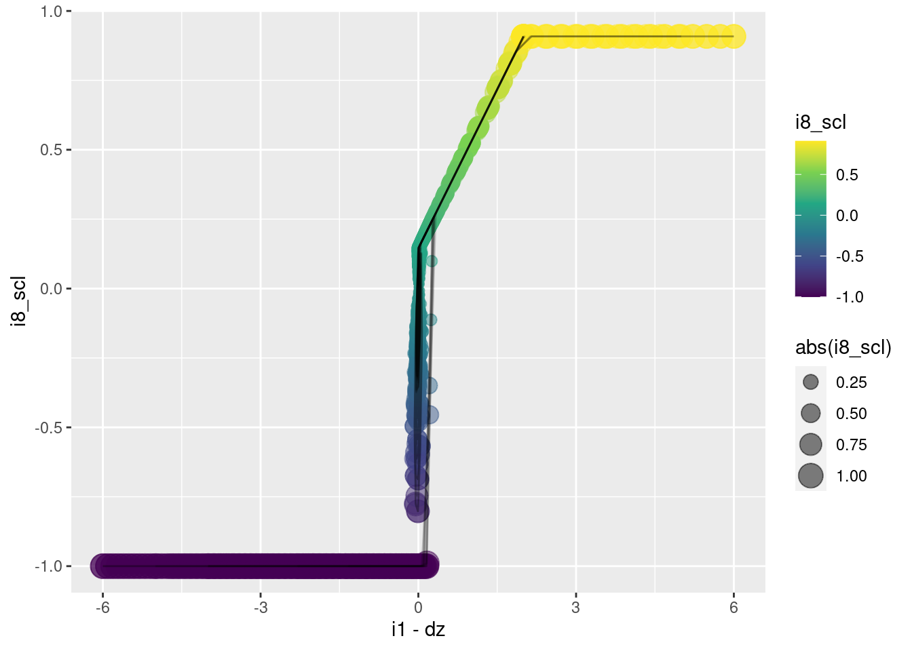
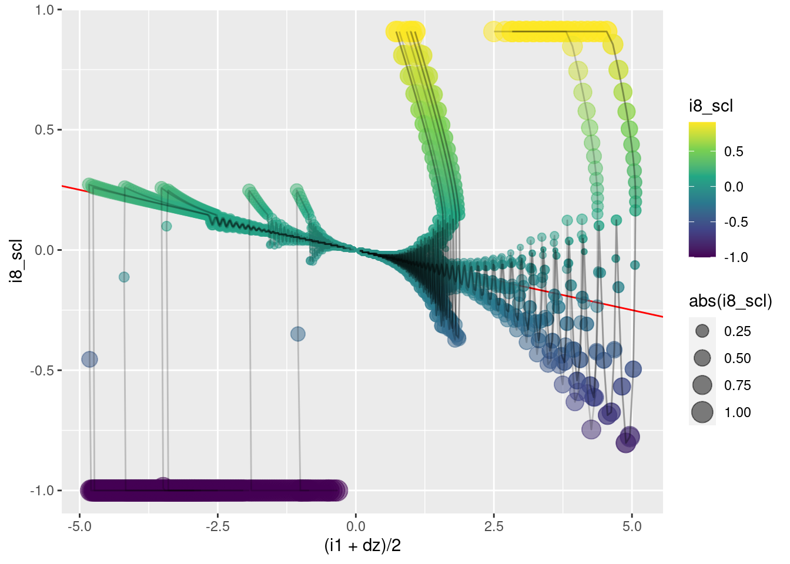
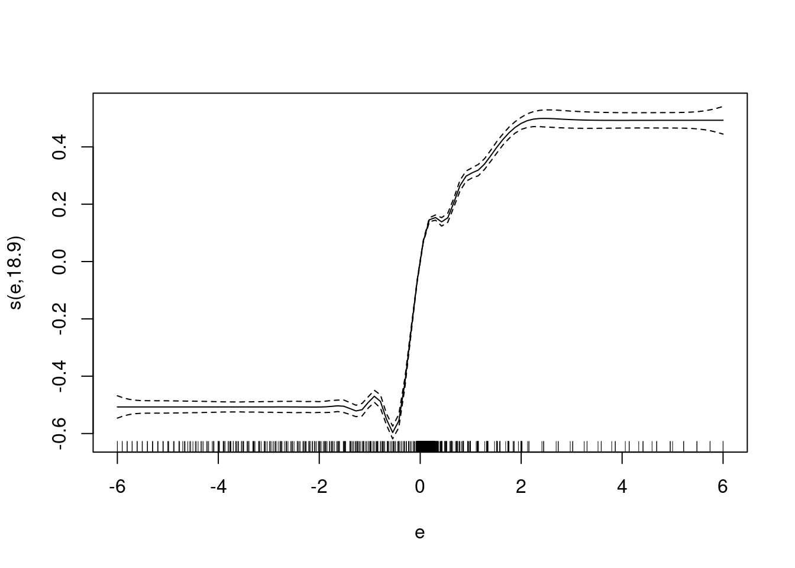
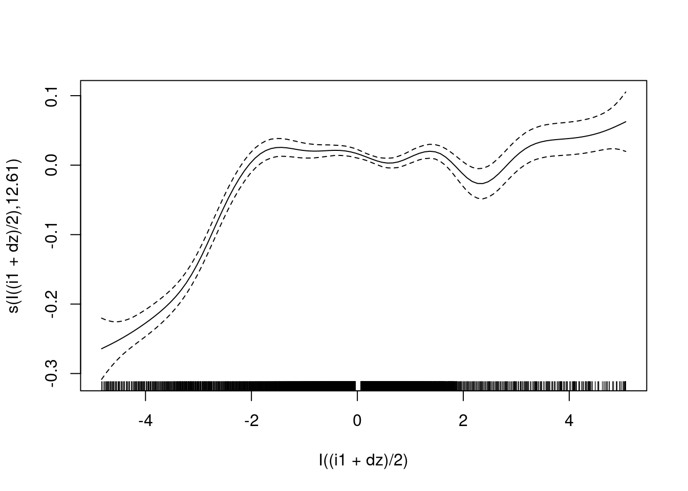
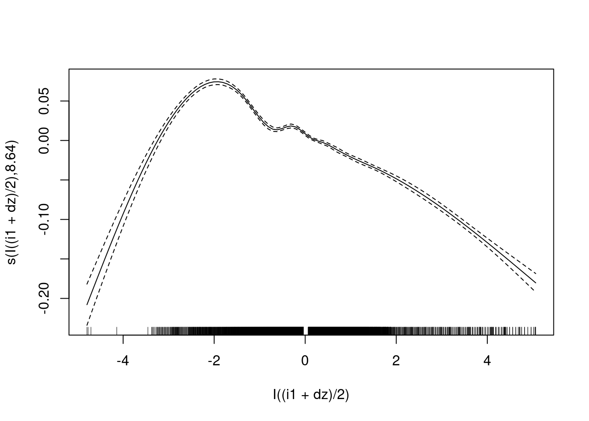
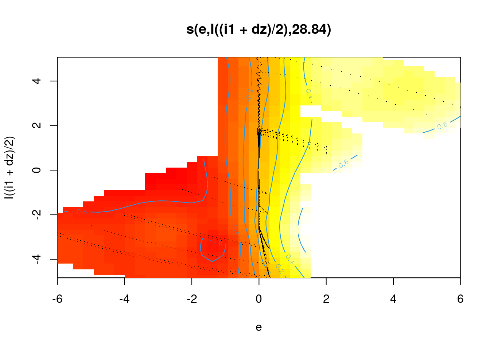
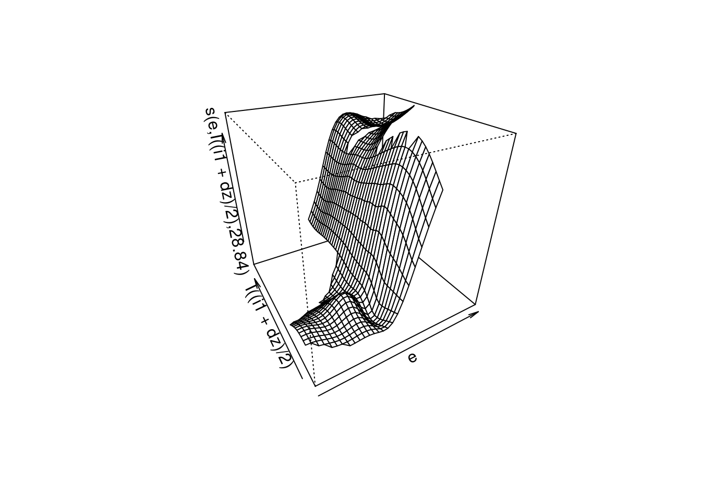

Last updated: 2021-09-10
Checks: 7 0
Knit directory:
VSA_altitude_hold/
This reproducible R Markdown analysis was created with workflowr (version 1.6.2). The Checks tab describes the reproducibility checks that were applied when the results were created. The Past versions tab lists the development history.
Great! Since the R Markdown file has been committed to the Git repository, you know the exact version of the code that produced these results.
Great job! The global environment was empty. Objects defined in the global environment can affect the analysis in your R Markdown file in unknown ways. For reproduciblity it’s best to always run the code in an empty environment.
The command set.seed(20210617) was run prior to running the code in the R Markdown file.
Setting a seed ensures that any results that rely on randomness, e.g.
subsampling or permutations, are reproducible.
Great job! Recording the operating system, R version, and package versions is critical for reproducibility.
Nice! There were no cached chunks for this analysis, so you can be confident that you successfully produced the results during this run.
Great job! Using relative paths to the files within your workflowr project makes it easier to run your code on other machines.
Great! You are using Git for version control. Tracking code development and connecting the code version to the results is critical for reproducibility.
The results in this page were generated with repository version 771869b. See the Past versions tab to see a history of the changes made to the R Markdown and HTML files.
Note that you need to be careful to ensure that all relevant files for the
analysis have been committed to Git prior to generating the results (you can
use wflow_publish or wflow_git_commit). workflowr only
checks the R Markdown file, but you know if there are other scripts or data
files that it depends on. Below is the status of the Git repository when the
results were generated:
Ignored files:
Ignored: .Rhistory
Ignored: .Rproj.user/
Ignored: renv/library/
Ignored: renv/local/
Ignored: renv/staging/
Note that any generated files, e.g. HTML, png, CSS, etc., are not included in this status report because it is ok for generated content to have uncommitted changes.
These are the previous versions of the repository in which changes were made
to the R Markdown (analysis/PID_task_analysis.Rmd) and HTML (docs/PID_task_analysis.html)
files. If you’ve configured a remote Git repository (see
?wflow_git_remote), click on the hyperlinks in the table below to
view the files as they were in that past version.
| File | Version | Author | Date | Message |
|---|---|---|---|---|
| Rmd | 771869b | Ross Gayler | 2021-09-10 | WIP |
| html | 771869b | Ross Gayler | 2021-09-10 | WIP |
| Rmd | 4d6a44c | Ross Gayler | 2021-09-10 | WIP |
| html | 4d6a44c | Ross Gayler | 2021-09-10 | WIP |
| Rmd | bb5f386 | Ross Gayler | 2021-09-09 | WIP |
| html | bb5f386 | Ross Gayler | 2021-09-09 | WIP |
| html | e1e1d25 | Ross Gayler | 2021-08-20 | WIP |
| Rmd | 415989a | Ross Gayler | 2021-08-20 | WIP |
| html | 415989a | Ross Gayler | 2021-08-20 | WIP |
| html | de8dbda | Ross Gayler | 2021-08-18 | Build site. |
| Rmd | af002d9 | Ross Gayler | 2021-08-18 | Add linear spline scalar encoder |
This notebook attempts to statistically characterise the PID controller as a black-box function.
Looking at the data flow diagram for Design 01, and ignoring the tuning parameters, there are three input variables:
And one output variable:
The integrated error nodes (\(i4\), \(i5\), \(i9\)) introduce a history dependence into the PID function. This part of the DFD implements the “I” (integral) term of “PID” controller. However, the previous analyses of the simulation data suggest that the integral term is only effective in the final phase of the approach to the target altitude, and introduces an (at best) harmless oscillation. This suggests that the I term may be unnecessary in this application.
If the I (integrated error) term is dropped from the PID controller it becomes a purely feed-forward, stateless function, which would be very easy to implement.
The purpose of this notebook is to statistically characterise the PID controller function as a stateless, feed-forward function. This function could be compared to the simulated data to see what has been lost by dropping the I term.
It is worth emphasizing that the PID controller being modelled is completely fixed (i.e.it does not learn the control function and is not adaptive to any changes) and is not guaranteed to be optimally tuned.
This notebook is based on the data generated by the simulation runs with multiple target altitudes per run.
Read the data from the simulations and mathematically reconstruct the values of the nodes not included in the input files.
# function to clip value to a range
clip <- function(
x, # numeric
x_min, # numeric[1] - minimum output value
x_max # numeric[1] - maximum output value
) # value # numeric - x constrained to the range [x_min, x_max]
{
x %>% pmax(x_min) %>% pmin(x_max)
}
# function to extract a numeric parameter value from the file name
get_param_num <- function(
file, # character - vector of file names
regexp # character[1] - regular expression for "param=value"
# use a capture group to get the value part
) # value # numeric - vector of parameter values
{
file %>% str_match(regexp) %>%
subset(select = 2) %>% as.numeric()
}
# function to extract a sequence of numeric parameter values from the file name
get_param_num_seq <- function(
file, # character - vector of file names
regexp # character[1] - regular expression for "param=value"
# use a capture group to get the value part
) # value # character - character representation of a sequence, e.g. "(1,2,3)"
{
file %>% str_match(regexp) %>%
subset(select = 2) %>%
str_replace_all(c("^" = "(", "_" = ",", "$" = ")")) # reformat as sequence
}
# function to extract a logical parameter value from the file name
get_param_log <- function(
file, # character - vector of file names
regexp # character[1] - regular expression for "param=value"
# use a capture group to get the value part
# value *must* be T or F
) # value # logical - vector of logical parameter values
{
file %>% str_match(regexp) %>%
subset(select = 2) %>% as.character() %>% "=="("T")
}
# read the data
d_wide <- fs::dir_ls(path = here::here("data", "multiple_target"), regexp = "/targets=.*\\.csv$") %>% # get file paths
vroom::vroom(id = "file") %>% # read files
dplyr::rename(k_tgt = target) %>% # rename for consistency with single target data
dplyr::mutate( # add extra columns
file = file %>% fs::path_ext_remove() %>% fs::path_file(), # get file name
# get parameters
targets = file %>% get_param_num_seq("targets=([._0-9]+)_start="), # hacky
k_start = file %>% get_param_num("start=([.0-9]+)"),
sim_id = paste(targets, k_start), # short ID for each simulation
k_p = file %>% get_param_num("kp=([.0-9]+)"),
k_i = file %>% get_param_num("Ki=([.0-9]+)"),
# k_tgt = file %>% get_param_num("k_tgt=([.0-9]+)"), # no longer needed
k_windup = file %>% get_param_num("k_windup=([.0-9]+)"),
uclip = FALSE, # constant across all files
dz0 = TRUE, # constant across all files
# Deal with the fact that the interpretation of the imported u value
# depends on the uclip parameter
u_import = u, # keep a copy of the imported value to one side
u = dplyr::if_else(uclip, # make u the "correct" value
u_import,
clip(u_import, 0, 1)
),
# reconstruct the missing nodes
i1 = k_tgt - z,
i2 = i1 - dz,
i3 = e * k_p,
i9 = lag(ei, n = 1, default = 0), # initialised to zero
i4 = e + i9,
i5 = i4 %>% clip(-k_windup, k_windup),
i6 = ei * k_i,
i7 = i3 + i6,
i8 = i7 %>% clip(0, 1)
) %>%
# add time variable per file
dplyr::group_by(file) %>%
dplyr::mutate(t = 1:n()) %>%
dplyr::ungroup()Rows: 6000 Columns: 8── Column specification ────────────────────────────────────────────────────────
Delimiter: ","
dbl (7): time, target, z, dz, e, ei, u
ℹ Use `spec()` to retrieve the full column specification for this data.
ℹ Specify the column types or set `show_col_types = FALSE` to quiet this message.dplyr::glimpse(d_wide)Rows: 6,000
Columns: 27
$ file <chr> "targets=1_3_5_start=3_kp=0.20_Ki=3.00_k_windup=0.20", "targe…
$ time <dbl> 0.00, 0.01, 0.02, 0.03, 0.04, 0.05, 0.06, 0.07, 0.08, 0.09, 0…
$ k_tgt <dbl> 1, 1, 1, 1, 1, 1, 1, 1, 1, 1, 1, 1, 1, 1, 1, 1, 1, 1, 1, 1, 1…
$ z <dbl> 3.000, 3.000, 3.003, 3.005, 3.006, 3.006, 3.005, 3.002, 2.999…
$ dz <dbl> 0.000, 0.286, 0.188, 0.090, -0.008, -0.106, -0.204, -0.302, -…
$ e <dbl> -2.000, -2.286, -2.191, -2.095, -1.998, -1.899, -1.800, -1.70…
$ ei <dbl> -0.200, -0.200, -0.200, -0.200, -0.200, -0.200, -0.200, -0.20…
$ u <dbl> 0.000, 0.000, 0.000, 0.000, 0.000, 0.000, 0.000, 0.000, 0.000…
$ targets <chr> "(1,3,5)", "(1,3,5)", "(1,3,5)", "(1,3,5)", "(1,3,5)", "(1,3,…
$ k_start <dbl> 3, 3, 3, 3, 3, 3, 3, 3, 3, 3, 3, 3, 3, 3, 3, 3, 3, 3, 3, 3, 3…
$ sim_id <chr> "(1,3,5) 3", "(1,3,5) 3", "(1,3,5) 3", "(1,3,5) 3", "(1,3,5) …
$ k_p <dbl> 0.2, 0.2, 0.2, 0.2, 0.2, 0.2, 0.2, 0.2, 0.2, 0.2, 0.2, 0.2, 0…
$ k_i <dbl> 3, 3, 3, 3, 3, 3, 3, 3, 3, 3, 3, 3, 3, 3, 3, 3, 3, 3, 3, 3, 3…
$ k_windup <dbl> 0.2, 0.2, 0.2, 0.2, 0.2, 0.2, 0.2, 0.2, 0.2, 0.2, 0.2, 0.2, 0…
$ uclip <lgl> FALSE, FALSE, FALSE, FALSE, FALSE, FALSE, FALSE, FALSE, FALSE…
$ dz0 <lgl> TRUE, TRUE, TRUE, TRUE, TRUE, TRUE, TRUE, TRUE, TRUE, TRUE, T…
$ u_import <dbl> -1.000, -1.057, -1.038, -1.019, -1.000, -0.980, -0.960, -0.94…
$ i1 <dbl> -2.000, -2.000, -2.003, -2.005, -2.006, -2.006, -2.005, -2.00…
$ i2 <dbl> -2.000, -2.286, -2.191, -2.095, -1.998, -1.900, -1.801, -1.70…
$ i3 <dbl> -0.4000, -0.4572, -0.4382, -0.4190, -0.3996, -0.3798, -0.3600…
$ i9 <dbl> 0.000, -0.200, -0.200, -0.200, -0.200, -0.200, -0.200, -0.200…
$ i4 <dbl> -2.000, -2.486, -2.391, -2.295, -2.198, -2.099, -2.000, -1.90…
$ i5 <dbl> -0.200, -0.200, -0.200, -0.200, -0.200, -0.200, -0.200, -0.20…
$ i6 <dbl> -0.600, -0.600, -0.600, -0.600, -0.600, -0.600, -0.600, -0.60…
$ i7 <dbl> -1.0000, -1.0572, -1.0382, -1.0190, -0.9996, -0.9798, -0.9600…
$ i8 <dbl> 0.0000, 0.0000, 0.0000, 0.0000, 0.0000, 0.0000, 0.0000, 0.000…
$ t <int> 1, 2, 3, 4, 5, 6, 7, 8, 9, 10, 11, 12, 13, 14, 15, 16, 17, 18…The altitude error (\(i1\)) is a deterministic function of the altitude (\(z\)) and the altitude target (\(k_{tgt}\)). The two inputs \(z\) and \(k_{tgt}\) can be replaced with the single input \(i1\). This has the advantage of meaning that there are only two inputs \(i1\), and \(dz\), which can be represented on a plane.
Display the distribution of input values to the PID controller across all simulation runs.
d_wide %>%
ggplot(aes(x = i1, y = dz)) +
geom_abline(slope = 1, intercept = 0, colour = "red") + # reference line
geom_point(alpha = 0.1) +
coord_equal()
The dark (because there are many overlapping points) diagonal line corresponds to the final phase of all the trajectories where the altitude error and vertical velocity both decrease to zero with any approximately constant ratio between the two quantities.
The light, approximately vertical curves correspond to the initial phase of all the trajectories, where the multicopter is either climbing at full power or dropping at zero power.
Rotate the axes by 45 degrees to make the diagonal axis-parallel in the new coordinates.
d_wide %>%
ggplot(aes( x = i1 - dz, y = (i1 + dz)/2)) +
geom_point(alpha = 0.1) +
coord_equal()
Add the clipped motor command to the plot.
The clipped motor command lies in the range \([0, 1]\) and 0.524 is the command level for hovering. It will be useful to rescale the motor command level so that zero corresponds to hover and the magnitude of the maximum deviation from hover is one.
p <- d_wide %>%
dplyr::mutate(i8_scl = (i8 - 0.524) / 0.524) %>%
ggplot(aes(group = paste(sim_id, k_tgt))) +
scale_color_viridis_c()
p +
geom_point(aes(x = i1 - dz, y = (i1 + dz)/2,
size = abs(i8_scl), colour = i8_scl),
alpha = 0.5) +
geom_path(aes(x = i1 - dz, y = (i1 + dz)/2), alpha = 0.2)
Remember, \(e \triangleq i2 \triangleq i1 - dz\). \(e\) is the “error”, which should be interpreted as the predicted altitude error in one second, assuming that the multicopter maintains the current vertical velocity.
This graph is a plan view, looking down on the surface to be modelled as a function of the input variables.
p +
geom_point(aes(x = i1 - dz, y = i8_scl,
size = abs(i8_scl), colour = i8_scl),
alpha = 0.5) +
geom_path(aes(x = i1 - dz, y = i8_scl), alpha = 0.2)
| Version | Author | Date |
|---|---|---|
| 0b43b6e | Ross Gayler | 2021-09-09 |
This graph is a side view of the surface to be modelled. The \(x\) axis corresponds to \(e\) and the orthogonal input (\((i1 + dz)/2)\)) is collapsed over.
To a first approximation:
When \(e \lt 0\) (the left half-plane), the motor command \(i8\) is minimum.
When \(e \gt 0\) (the right half-plane), the motor command \(i8\) is (approximately) maximum.
p +
geom_abline(slope = -1/20, intercept = 0, colour = "red") + # reference line
geom_point(aes(x = (i1 + dz)/2, y = i8_scl,
size = abs(i8_scl), colour = i8_scl),
alpha = 0.5) +
geom_path(aes(x = (i1 + dz)/2, y = i8_scl), alpha = 0.2)
| Version | Author | Date |
|---|---|---|
| 0b43b6e | Ross Gayler | 2021-09-09 |
This graph is the other side view of the surface to be modelled. The \(x\) axis corresponds to (\((i1 + dz)/2)\)) and the orthogonal input \(e\) is collapsed over.
Fitting a smoothing spline regression to the data, it is very helpful if the predictor variables capture the major features of the data (to minimise the work done by the smoothing). Using an appropriately crafted set of predictor variables provides a bias to the functions that can be learned from the data.
I will use Generalised Additive Models (GAM) as the modelling technique here.
Show what a GAM can do without any problem-specific feature engineering.
Fit marginal smooths first to help build up intuition.
Remember that \(u \triangleq i8\).
Model \(u\) as a function of \(e\).
fit1 <- mgcv::gam(u ~ s(e, bs = "ad"), data = d_wide)
summary(fit1)
Family: gaussian
Link function: identity
Formula:
u ~ s(e, bs = "ad")
Parametric coefficients:
Estimate Std. Error t value Pr(>|t|)
(Intercept) 0.507238 0.000639 793.8 <2e-16 ***
---
Signif. codes: 0 '***' 0.001 '**' 0.01 '*' 0.05 '.' 0.1 ' ' 1
Approximate significance of smooth terms:
edf Ref.df F p-value
s(e) 18.9 21.57 1673 <2e-16 ***
---
Signif. codes: 0 '***' 0.001 '**' 0.01 '*' 0.05 '.' 0.1 ' ' 1
R-sq.(adj) = 0.857 Deviance explained = 85.8%
GCV = 0.0024582 Scale est. = 0.0024501 n = 6000plot(fit1)
| Version | Author | Date |
|---|---|---|
| 470fc77 | Ross Gayler | 2021-09-10 |
This uses an adaptive smoother (bs = "ad") so that the degrees of
freedom are concentrated where the curvature is highest.
The scaling on the \(y\) axis of the plot is arbitrary.
I will use \(e_{orth}\) as a convenience to refer to \((i1 + dz)/2\) because it is orthogonal to \(e\).
Model \(u\) as a function of \(e_{orth}\).
fit2 <- mgcv::gam(u ~ s(I((i1 + dz)/2), bs = "ad"), data = d_wide)
summary(fit2)
Family: gaussian
Link function: identity
Formula:
u ~ s(I((i1 + dz)/2), bs = "ad")
Parametric coefficients:
Estimate Std. Error t value Pr(>|t|)
(Intercept) 0.507238 0.001555 326.1 <2e-16 ***
---
Signif. codes: 0 '***' 0.001 '**' 0.01 '*' 0.05 '.' 0.1 ' ' 1
Approximate significance of smooth terms:
edf Ref.df F p-value
s(I((i1 + dz)/2)) 12.61 15.29 72.03 <2e-16 ***
---
Signif. codes: 0 '***' 0.001 '**' 0.01 '*' 0.05 '.' 0.1 ' ' 1
R-sq.(adj) = 0.155 Deviance explained = 15.7%
GCV = 0.014548 Scale est. = 0.014515 n = 6000plot(fit2)
| Version | Author | Date |
|---|---|---|
| 470fc77 | Ross Gayler | 2021-09-10 |
Fit the model on a subset of the observations corresponding to the terminal phases.
fit3 <- mgcv::gam(u ~ s(I((i1 + dz)/2), bs = "cr"), data = d_wide,
subset = abs(e) < 0.1)
plot(fit3)
| Version | Author | Date |
|---|---|---|
| 470fc77 | Ross Gayler | 2021-09-10 |
Fit a smooth that is a function of the joint values of \(e\) and \(e_{orth}\).
Use a thin-plate smoothing basis (bs = "tp").
fit4 <- mgcv::gam(u ~ s(e, I((i1 + dz)/2), bs = "tp"), data = d_wide)
summary(fit4)
Family: gaussian
Link function: identity
Formula:
u ~ s(e, I((i1 + dz)/2), bs = "tp")
Parametric coefficients:
Estimate Std. Error t value Pr(>|t|)
(Intercept) 0.5072383 0.0005842 868.3 <2e-16 ***
---
Signif. codes: 0 '***' 0.001 '**' 0.01 '*' 0.05 '.' 0.1 ' ' 1
Approximate significance of smooth terms:
edf Ref.df F p-value
s(e,I((i1 + dz)/2)) 28.84 29 1529 <2e-16 ***
---
Signif. codes: 0 '***' 0.001 '**' 0.01 '*' 0.05 '.' 0.1 ' ' 1
R-sq.(adj) = 0.881 Deviance explained = 88.1%
GCV = 0.0020577 Scale est. = 0.0020475 n = 6000plot(fit4, se = FALSE, scheme = 2)
| Version | Author | Date |
|---|---|---|
| 470fc77 | Ross Gayler | 2021-09-10 |
plot(fit4, se = FALSE, scheme = 1, theta = -30)
| Version | Author | Date |
|---|---|---|
| 470fc77 | Ross Gayler | 2021-09-10 |
Model the function, this time using features designed to capture the major aspects of the shape of the surface. Such features constitute a strong bias on the set of functions that can be learned from the data. They also provide a mechanism for extrapolating outside the support of the data.
The previous analyses showed that the surface should be partitioned into three regions along \(e\).
The \(e = 0\) class is infinitesimally narrow, which is likely to cause problems in a practical system. Consequently, I will make that class a small finite width.
e_fuzz <- 0.1 # half width of central strip
fit5 <- mgcv::gam(u ~ I(e >= e_fuzz) + I(abs(e) < e_fuzz), data = d_wide)
summary(fit5)
Family: gaussian
Link function: identity
Formula:
u ~ I(e >= e_fuzz) + I(abs(e) < e_fuzz)
Parametric coefficients:
Estimate Std. Error t value Pr(>|t|)
(Intercept) 6.661e-16 3.917e-03 0.0 1
I(e >= e_fuzz)TRUE 7.351e-01 5.177e-03 142.0 <2e-16 ***
I(abs(e) < e_fuzz)TRUE 5.164e-01 4.005e-03 128.9 <2e-16 ***
---
Signif. codes: 0 '***' 0.001 '**' 0.01 '*' 0.05 '.' 0.1 ' ' 1
R-sq.(adj) = 0.781 Deviance explained = 78.1%
GCV = 0.0037613 Scale est. = 0.0037594 n = 6000Scoring out regions by eye from the regression coefficients (this is a step function):
\(e \le -0.1\) - \(u \approx 0\)
\(-0.1 \lt e \lt +0.1\) - \(u \approx 0.52\)
\(e \ge +0.1\) - \(u \approx 0.74\)
~78% deviance explained (compared to 86% for the smoothing spline model).
Look at the plot of fit1. The smoothing spline model has a slope
between $e and \(e \approx 2\). The current model (fit5)
can’t account for this slope, which is why the goodness of fit is
reduced.
However, it’s not clear that the slope is actually needed for the controller to work well, so I’ll ignore it.
Now add the \(e_{orth}\) into the model.
\(u\) is a linear function of \(e_{orth}\) when \(e \approx 0\) and irrelevant elsewhere, which requires an interaction of \(e_{orth}\) with \(e\).
fit6 <- mgcv::gam(
u ~ I(e >= e_fuzz) + I(abs(e) < e_fuzz) +
I(as.numeric(abs(e) < e_fuzz) * (i1 + dz)/2),
data = d_wide)
summary(fit6)
Family: gaussian
Link function: identity
Formula:
u ~ I(e >= e_fuzz) + I(abs(e) < e_fuzz) + I(as.numeric(abs(e) <
e_fuzz) * (i1 + dz)/2)
Parametric coefficients:
Estimate Std. Error t value
(Intercept) -3.886e-16 3.433e-03 0.00
I(e >= e_fuzz)TRUE 7.351e-01 4.537e-03 162.02
I(abs(e) < e_fuzz)TRUE 5.214e-01 3.511e-03 148.50
I(as.numeric(abs(e) < e_fuzz) * (i1 + dz)/2) -2.665e-02 6.258e-04 -42.59
Pr(>|t|)
(Intercept) 1
I(e >= e_fuzz)TRUE <2e-16 ***
I(abs(e) < e_fuzz)TRUE <2e-16 ***
I(as.numeric(abs(e) < e_fuzz) * (i1 + dz)/2) <2e-16 ***
---
Signif. codes: 0 '***' 0.001 '**' 0.01 '*' 0.05 '.' 0.1 ' ' 1
R-sq.(adj) = 0.832 Deviance explained = 83.2%
GCV = 0.0028886 Scale est. = 0.0028866 n = 6000Scoring out regions by eye from the regression coefficients (this is a step function):
\(e \le -0.1\) - \(u \approx 0\)
\(-0.1 \lt e \lt +0.1\) - \(u \approx -0.027 e_{orth} + 0.52\)
\(e \ge +0.1\) - \(u \approx 0.74\)
~83% deviance explained (compared to 88% for the bivariate smoothing spline model).
This model seems to pick up the major features of the surface.
In a future analysis I will use the construction of these terms to guide the placement of the knots in VSA representations of scalars.
sessionInfo()R version 4.1.1 (2021-08-10)
Platform: x86_64-pc-linux-gnu (64-bit)
Running under: Ubuntu 21.04
Matrix products: default
BLAS: /usr/lib/x86_64-linux-gnu/blas/libblas.so.3.9.0
LAPACK: /usr/lib/x86_64-linux-gnu/lapack/liblapack.so.3.9.0
locale:
[1] LC_CTYPE=en_AU.UTF-8 LC_NUMERIC=C
[3] LC_TIME=en_AU.UTF-8 LC_COLLATE=en_AU.UTF-8
[5] LC_MONETARY=en_AU.UTF-8 LC_MESSAGES=en_AU.UTF-8
[7] LC_PAPER=en_AU.UTF-8 LC_NAME=C
[9] LC_ADDRESS=C LC_TELEPHONE=C
[11] LC_MEASUREMENT=en_AU.UTF-8 LC_IDENTIFICATION=C
attached base packages:
[1] stats graphics grDevices datasets utils methods base
other attached packages:
[1] tibble_3.1.4 Matrix_1.3-4 purrr_0.3.4 DiagrammeR_1.0.6.1
[5] mgcv_1.8-36 nlme_3.1-153 ggplot2_3.3.5 stringr_1.4.0
[9] dplyr_1.0.7 vroom_1.5.4 here_1.0.1 fs_1.5.0
loaded via a namespace (and not attached):
[1] tidyselect_1.1.1 xfun_0.25 splines_4.1.1 lattice_0.20-44
[5] colorspace_2.0-2 vctrs_0.3.8 generics_0.1.0 viridisLite_0.4.0
[9] htmltools_0.5.2 yaml_2.2.1 utf8_1.2.2 rlang_0.4.11
[13] later_1.3.0 pillar_1.6.2 glue_1.4.2 withr_2.4.2
[17] bit64_4.0.5 RColorBrewer_1.1-2 lifecycle_1.0.0 munsell_0.5.0
[21] gtable_0.3.0 workflowr_1.6.2 visNetwork_2.0.9 htmlwidgets_1.5.4
[25] evaluate_0.14 labeling_0.4.2 knitr_1.34 tzdb_0.1.2
[29] fastmap_1.1.0 httpuv_1.6.3 parallel_4.1.1 fansi_0.5.0
[33] highr_0.9 Rcpp_1.0.7 renv_0.14.0 promises_1.2.0.1
[37] scales_1.1.1 jsonlite_1.7.2 farver_2.1.0 bit_4.0.4
[41] digest_0.6.27 stringi_1.7.4 bookdown_0.24 rprojroot_2.0.2
[45] grid_4.1.1 cli_3.0.1 tools_4.1.1 magrittr_2.0.1
[49] crayon_1.4.1 whisker_0.4 pkgconfig_2.0.3 ellipsis_0.3.2
[53] rstudioapi_0.13 rmarkdown_2.10 R6_2.5.1 git2r_0.28.0
[57] compiler_4.1.1